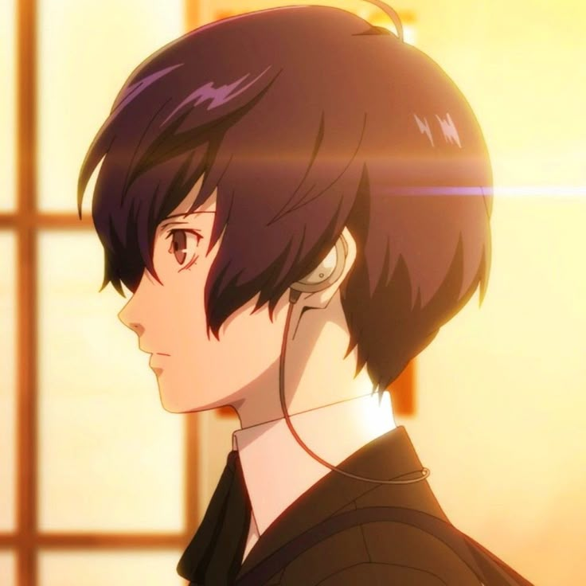

PwrSat

My Objective
I will do anything for the people i care dearly to be happy
Education
-
Elementary School:
(Unknown)
-
Middle School:
(Unknown)
-
High School:
Gekkoukan High | 2009-2010
Work experience
Skills
- Proficiency in Close Quarters Combat
- Smooth Talker
- Good Leadership
- Wildcard
- Arcana of Universe
Achievements
- The Smarters Student 2nd Year in Gekkoukan High 2009
- Sealing nyx (the dead itself)
- Manage to Save Humanity
About Me
Contact Me